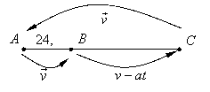

П19.1 №28
Автомобиль выезжает из пункта  и едет с постоянной скоростью
и едет с постоянной скоростью  км/час до пункта
км/час до пункта  , отстоящего от пункта на расстояние 24,5 км. В пункте автомобиль переходит на
равнозамедленное движение, причем за каждый час его скорость уменьшается на 54
км/час, и движется так до полной остановки. Затем автомобиль сразу же
поворачивает обратно и возвращается в с
постоянной скоростью . Какова должна
быть скорость , чтобы автомобиль за
наименьшее время проезжал путь от до
полной остановки и обратно до пункта указанным
способом?
, отстоящего от пункта на расстояние 24,5 км. В пункте автомобиль переходит на
равнозамедленное движение, причем за каждый час его скорость уменьшается на 54
км/час, и движется так до полной остановки. Затем автомобиль сразу же
поворачивает обратно и возвращается в с
постоянной скоростью . Какова должна
быть скорость , чтобы автомобиль за
наименьшее время проезжал путь от до
полной остановки и обратно до пункта указанным
способом?
и едет с постоянной скоростью км/час до пункта , отстоящего от пункта на расстояние 24,5 км. В пункте автомобиль переходит на
равнозамедленное движение, причем за каждый час его скорость уменьшается на 54
км/час, и движется так до полной остановки. Затем автомобиль сразу же
поворачивает обратно и возвращается в с
постоянной скоростью . Какова должна
быть скорость , чтобы автомобиль за
наименьшее время проезжал путь от до
полной остановки и обратно до пункта указанным
способом?РЕШЕНИЕ:

Вычислим время, которое затрачивает автомобиль
на весь путь от А до остановки и обратно: км.
, где ,
,
;
, 
Производная
при ,
при и при
,
значит, принимает
при км/час наименьшее значение.